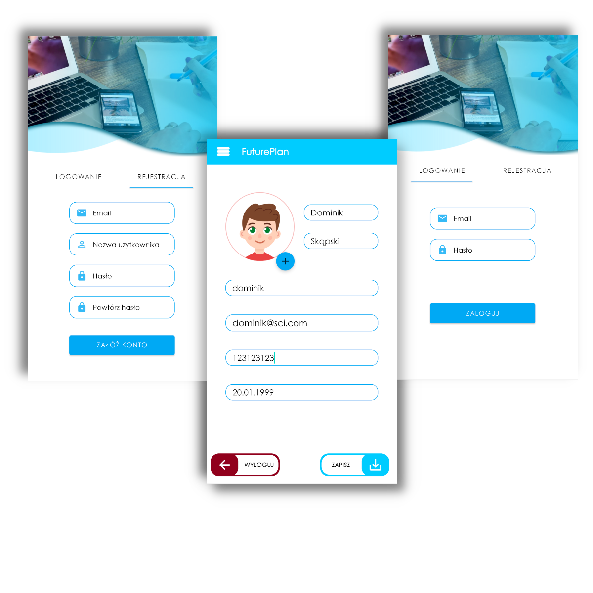
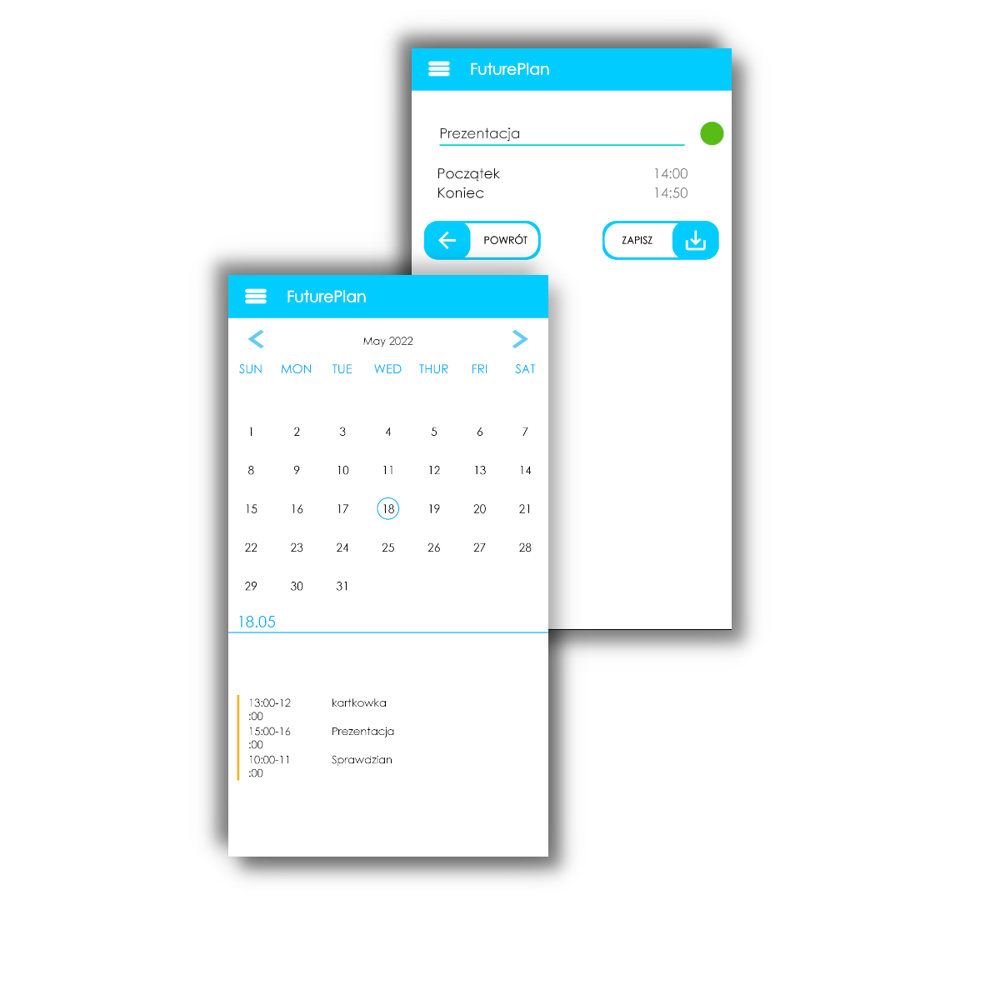
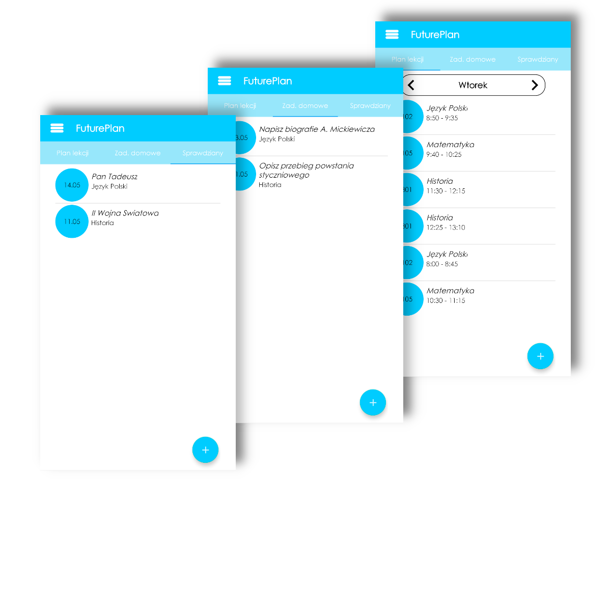
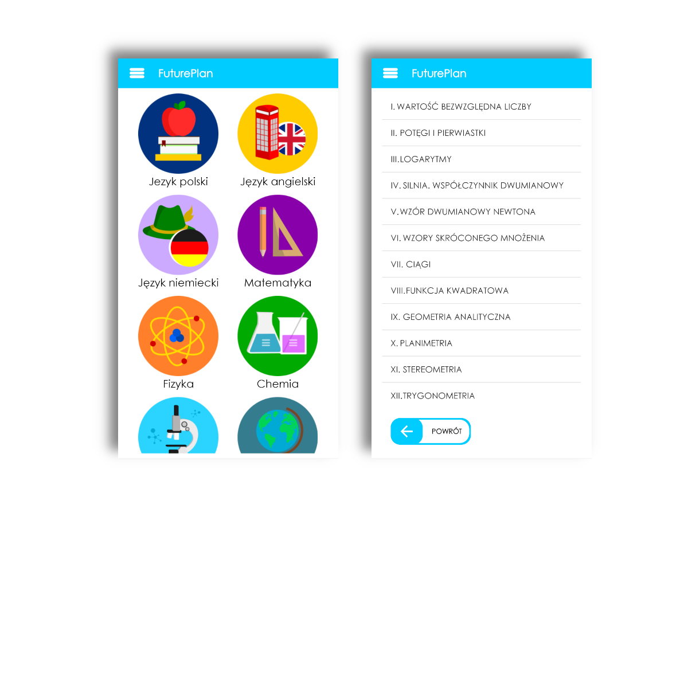
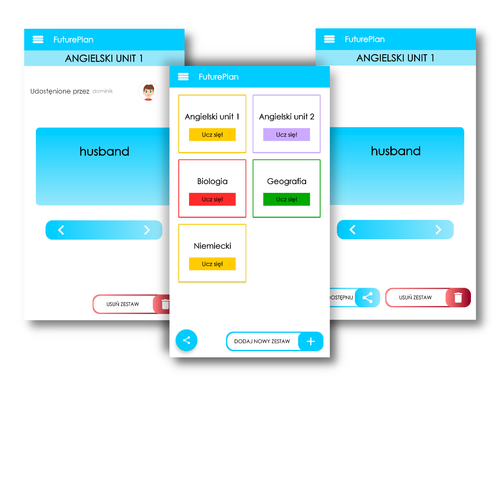
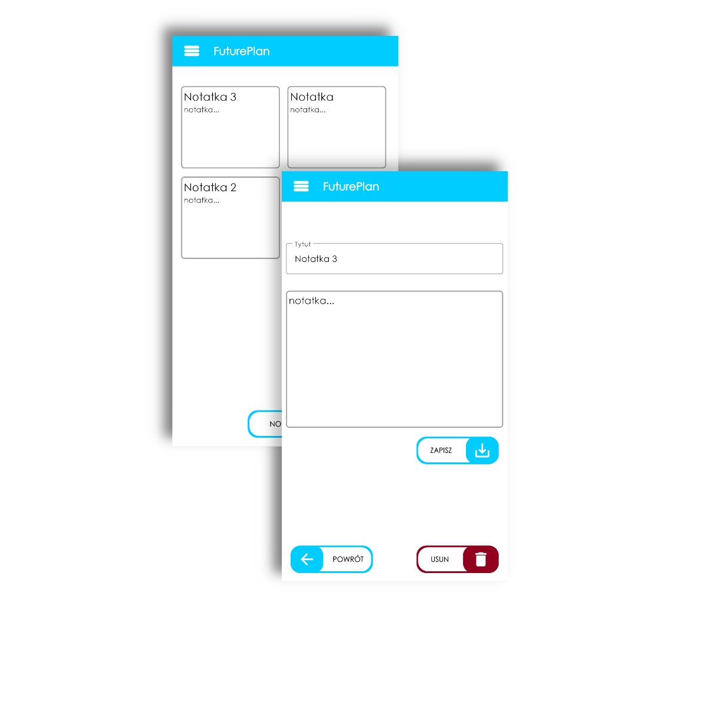
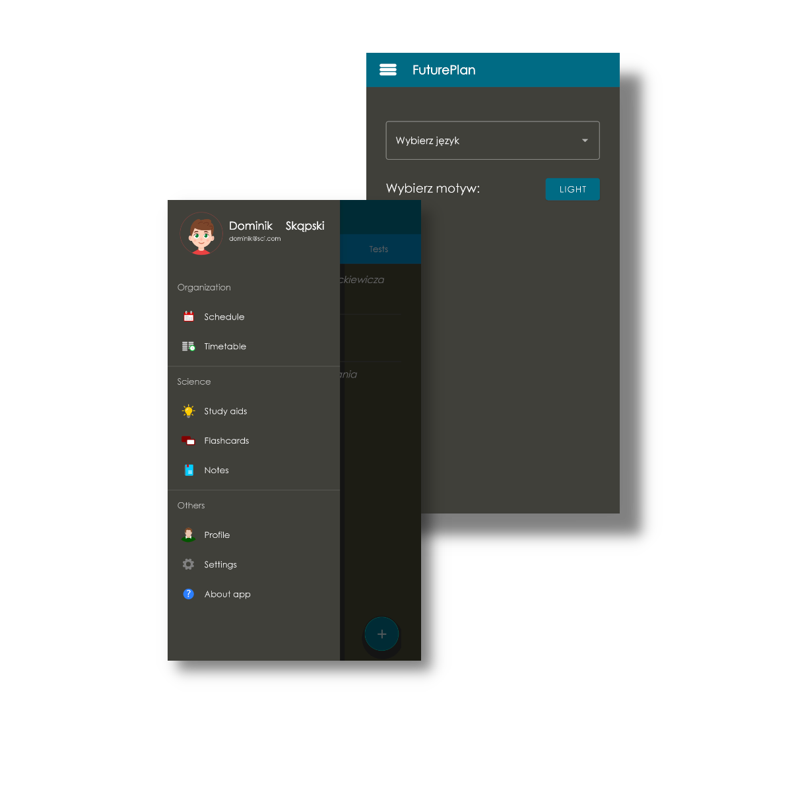

System rejestracji i logowania
Dzięki systemowi rejestracji i logowania użytkownik zapisuje swoje dane w bazie danych, dzięki czemu ma dostęp do nich na innych urządzeniach.
Do przetrzymywania danych używamy Firebase od Google dzięki czemu dane użytkowników są bezpiecznie przechowywane.
Nowy użytkownik powinien podać nazwę użytkownika, adres email oraz hasło. Aplikacja zapamiętuje dane więc dopóki użytkownik się nie wyloguje to będzie zalogowany.
Do zalogowania wystarczy podać adres email oraz hasło, a także trzeba mieć dostęp do internetu.
Po zalogowaniu użytkownik może dowolnie edytować swoje dane takie jak Imię, Nazwisko czy Numer telefonu oraz może zmienić zdjęcie na dowolne ze swojej galerii.
Terminarz
Funkcja terminarza pozwala użytkownikom na sprawdzenie co mają zaplanowane na dany dzień. Po kliknięciu na dany dzień również pokaże się plan lekcji wcześniej podany przez użytkownika oraz informacja o zadaniach domowych lub sprawdzianach i kartkówkach. Użytkownik może także dodać własne nowe wydarzenia.
Plan lekcji
W zakładce plan lekcji mamy możliwość dodania naszego planu lekcji.
Jest możliwość także dodania zadania domowego z danego przedmiotu co ułatwi użytkownikom zapamiętanie jakie zadania muszą wykonać na dany dzień.
Ostatnią funkcją w tej zakładce jest dodanie wydarzenia takiego jak sprawdzian czy kartkówka co także ułatwia użytkownikowi zaplanowanie sobie czasu na naukę.
Pomoce naukowe
W zakładce Pomoce naukowe mamy zebrane najważniejsze informacje z danego przedmiotu szkolnego, dzięki czemu w każdej chwili możemy sobie szybko przypomnieć dane zagadnienie. Dzięki kolorowej szacie graficznej wszystko jest czytelniejsze.
Nasz zespół na bieżąco dodanie kolejne zagadnienia by jeszcze bardziej ułatwić użytkownikom naukę.
Fiszki
Funkcja fiszek pozwala na dodawanie własnego zestawu do nauki oraz udostępniania go. Ułatwia to użytkownikom uczenia się własnych zagadnień takich jak np. słówka z innego języka.
Notatki
Dzięki funkcji notatek użytkownik może notować sobie ważne dla siebie informacje. Funkcja umożliwia także edytowanie notatek gdyby popełniono błąd.
Ustawienia
W ustawieniach użytkownik będzie mógł wybrać sobie język, w którym ma być wyświetlana aplikacja. Aktualnie dostępne języki to Polski, Angielski oraz Niemiecki. Na bieżąco staramy się dodawać kolejne języki.
Możliwa jest także zmiana motywu aplikacji na kolor ciemny co jest zalecane jeśli używa się aplikacji w ciemnym pomieszczeniu.